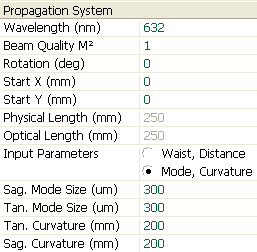

LaserCanvas 5 > Tutorials > Collimating Telescope >
Part 1. Construct the Cavity
< Prev | Next >
- From the File menu, select New Propagation, or click the
 New Propagation button on the toolbar.
New Propagation button on the toolbar.
-
In the Propagation System properties, enter the HeNe laser wavelength, 632 nm.
-
Click on the radio button to set the Input Parameters as Mode and Curvature.
- Enter the remaining parameters as shown.

Select the system segment by clicking the Source optic at the centreline.-
Insert two lenses by selecting menu Edit | Insert | Lens or clicking the Lens button on the toolbar.
- Select the first lens by clicking at the centreline.
In the Property Manager, set the focal length to -200 mm. This is our diverging lens.
- Select the second lens by clicking at the centreline.
In the Property Manager, set the focal length to +400 mm. This is our collimating lens.
Additionally, set the Distance to Next to 500 mm, to give some extra space to the terminating screen.- Save the system by selecting menu File | Save As... or clicking the
 Save button on the toolbar.
Save button on the toolbar.
< Prev | Next >